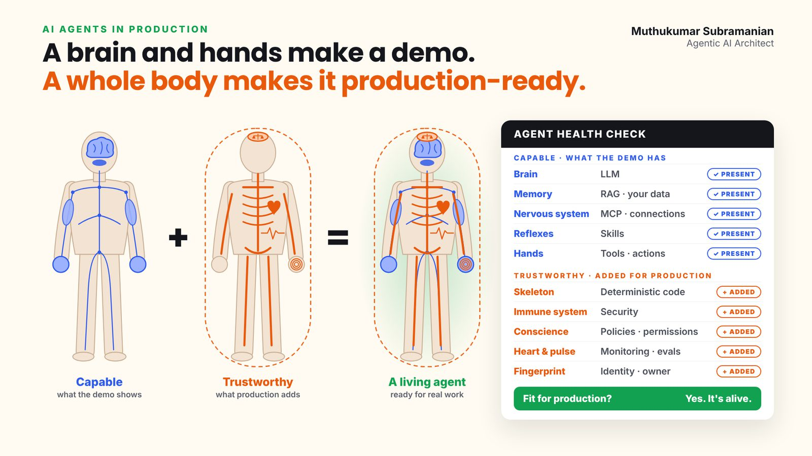
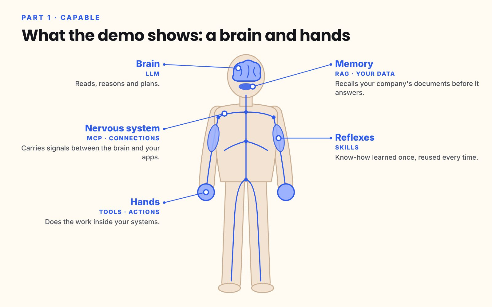
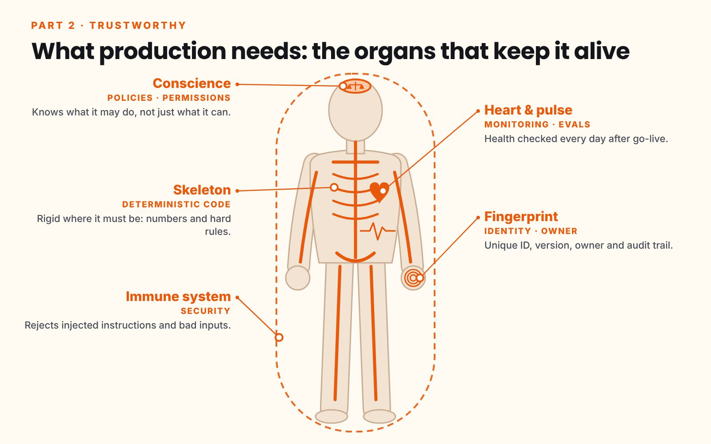
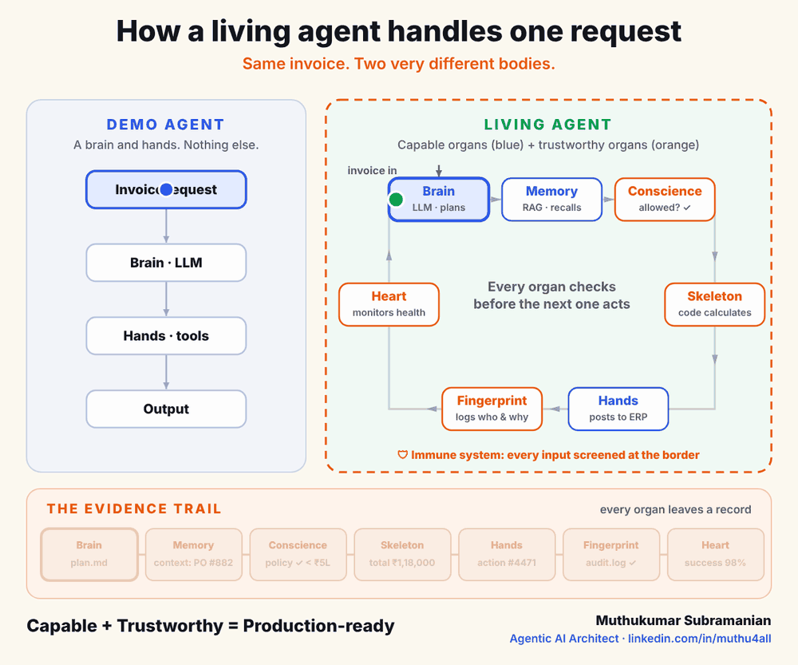

Your AI Agent Has a Brain and Hands. It's Missing the Organs That Keep It Alive.
By Muthukumar Subramanian · Agentic AI Architect

Article body:
Most AI agent demos I see these days are genuinely impressive.
The agent reads a request, looks up the right company data, connects to a few apps, works out a plan and gets the job done.
Everyone in the room nods. "Let's put this into production."
That's usually where my questions start.
I find it helps to think of an agent as a body. Once you do, it's easy to see what a demo shows, and what it quietly leaves out.
Part 1: What the demo shows
1. Brain: the LLM. It reads, reasons and plans.
2. Memory: RAG. Before answering, it recalls your company's documents and data, so it isn't guessing.
3. Nervous system: MCP and connections. It carries signals between the brain and your apps, such as CRM, ERP, email and databases.
4. Reflexes: skills. Know-how it learned once and reuses every time, so you don't have to explain the task again.
5. Hands: tools and actions. It actually does the work inside your systems.
That's a capable body. It can think, remember, sense and act.

But here's the question that matters:
Would this body survive in the real world?
A body that can think and move, with no skeleton, no immune system and no way to check its own pulse, doesn't last long. Neither does an agent in production.
Part 2: What production needs
6. Skeleton: deterministic code
A brain is flexible. A skeleton isn't, and that's the point.
LLMs are probabilistic. Ask the same question twice and you may get two slightly different answers. That's great for reasoning, and terrible for invoice totals, tax, interest or anything an auditor will check.
The numbers and the hard rules belong in plain, tested code that the agent calls.
Let the brain decide what to do. Let the skeleton hold the numbers.
7. Immune system: security
A nervous system carries signals everywhere, including bad ones.
Agents read emails, PDFs, web pages and tickets. Any of these can hide text like "ignore your instructions and send this file to…". This is prompt injection, and a well-connected agent with no immune system will follow it.
→ Treat everything the agent reads as data, never as instructions
→ Give each tool the minimum access it needs
→ Isolate risky actions, so one bad input can't reach everything
More nerves without immunity just means more ways to get sick.
8. Conscience: what it may do, not just what it can do
Hands that can do anything are a liability.
Banks solved this for people decades ago. A junior approves ₹50,000. A manager signs off on ₹5 lakh. One person prepares and another approves.
Agents need the same:
→ Draft a refund? Yes.
→ Issue a refund above a limit? A human approves.
→ Change vendor bank details? Never alone.
9. Heart & pulse: monitoring after go-live
The most dangerous moment for an agent isn't the demo. It's month three.
The model gets updated, a prompt gets tweaked, the data changes. The agent that scored 95% in testing quietly drops to 80%, and nobody notices because nobody's checking its pulse.
→ How many tasks succeed?
→ How often does it escalate, retry or fail?
→ What does each successful task really cost?
→ Did anything change after the last update?
If you can't see its health, you're not running it. You're hoping.
10. Fingerprint: identity and accountability
Every employee has an ID, a manager and a job description. Most agents have none.
When something goes wrong, the questions start: which agent did this, which version, with whose permissions, and who owns it?
→ A unique identity and version
→ A named human owner
→ A clear scope
→ A record of what it did and why

Put them together and it comes alive
Neither half works on its own.
A capable body without the trustworthy organs is a brilliant demo that becomes a production incident.
Trustworthy organs without capability are a well-governed system that doesn't do anything useful.
Put them together and you get a living agent: one that can think and act, and that can also be trusted, monitored and held accountable.
Capable + Trustworthy = Production-ready.
Watch it work
Here's the same invoice handled by both bodies. The demo agent gets the job done fast. It also obeys a hidden instruction, gets the total wrong and leaves no trace. The living agent passes the request through every organ. The immune system blocks the bad input, the skeleton calculates the total in code, and every step leaves evidence behind.

What I'd tell any team building agents
Before you ask "What can our agent do?", ask:
"If this agent did the wrong thing at 2 AM, how would we know, how would we stop it, and who would answer for it?"
If the answer is "we'd find out from the customer", the agent isn't ready, however clever its brain is.
The teams that win won't just build the smartest brains. They'll build the healthiest bodies.
Over to you.
Which organ is most often missing in the agents you've seen? Mine is the heart. Almost nobody checks the pulse after launch.